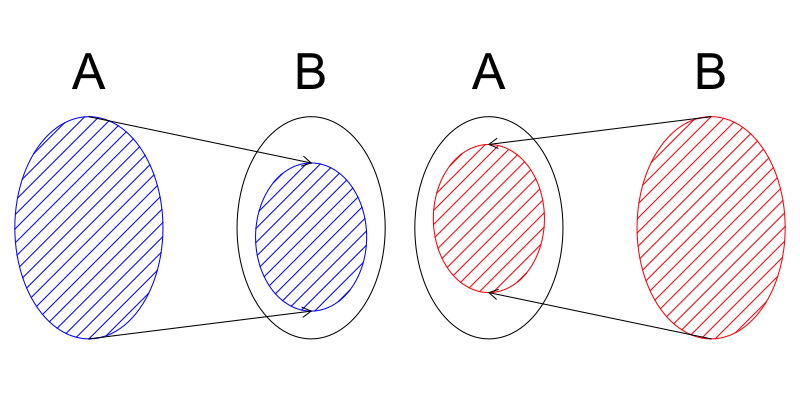
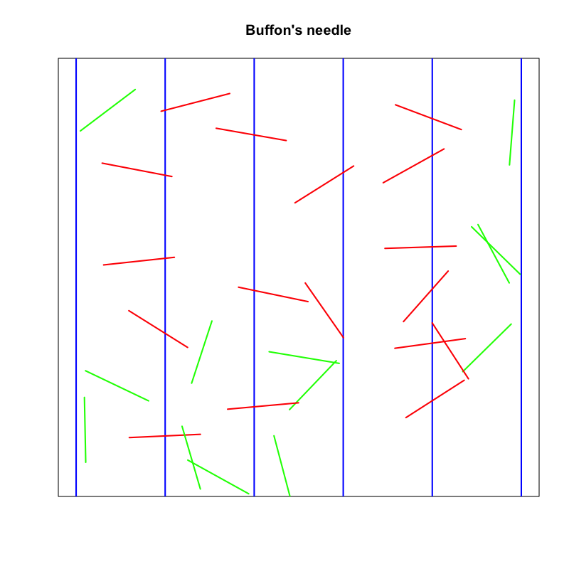

確率・統計 - 第2講
(Press ? for help, n and p for next and previous slide)
村田 昇
定義
集合の全ての要素に自然数で順番に番号が与えられることを 可算 (可付番) (enumerable, countable) という．
区間 \((0,1)\) に含まれる全ての有理数は可算
| 分子\分母 | 2 | 3 | 4 | 5 | 6 | \(\cdots\) |
|---|---|---|---|---|---|---|
| 1 | 1/2 | 1/3 | 1/4 | 1/5 | 1/6 | \(\cdots\) |
| 2 | 2/3 | 2/5 | \(\cdots\) | |||
| 3 | 3/4 | 3/5 | \(\cdots\) | |||
| 4 | 4/5 | \(\cdots\) | ||||
| 5 | 5/6 | \(\cdots\) | ||||
| \(\vdots\) | \(\cdots\) |

Figure 1: Bernsteinの定理
全ての自然数 \(n\) から有理数の部分集合 \(1/q\) への1対1対応
(有理数としては \(1/q\) の形しか用いない)
全ての有理数 \(p/q\) から自然数 \(n\) の部分集合への1対1対応
(自然数としては2と3の倍数しか用いない)
定義
可算でないことを 非可算 (unenumerable, uncountable) という．(不可算と書かれている場合もある)
その1
区間 \((0,1)\) に含まれる 無理数の集合は可算 と仮定する．
その2
有理数の集合は可算なので， 仮定より無理数と有理数の和である実数も可算となる．
その3
自然数との対応付けを行い，番号順に並べる．
\begin{equation} \begin{array}{cc@{\,}c@{\,}c@{\,}c@{\,}c@{\,}c} 1:&0.&d^{1}_{1}&d^{1}_{2}&d^{1}_{3}&d^{1}_{4}&\dotsm\\ 2:&0.&d^{2}_{1}&d^{2}_{2}&d^{2}_{3}&d^{2}_{4}&\dotsm\\ 3:&0.&d^{3}_{1}&d^{3}_{2}&d^{3}_{3}&d^{3}_{4}&\dotsm\\ 4:&0.&d^{4}_{1}&d^{4}_{2}&d^{4}_{3}&d^{4}_{4}&\dotsm\\ \vdots&&&\vdots \end{array} \end{equation}ただし，有限桁の小数の場合は \(0\) で埋める．
その4
第n番の数の第n桁目 \(d^{n}_{n}\) とは 異なる数 \(\tilde{d}^{n}_{n}\not=d^{n}_{n}\) を選び，これらを並べた次の数を考える．
\begin{equation} \begin{array}{c@{\,}c@{\,}c@{\,}c@{\,}c@{\,}c} 0.&\tilde{d}^{1}_{1}&\tilde{d}^{2}_{2}&\tilde{d}^{3}_{3}&\tilde{d}^{4}_{4} &\dotsm \end{array} \end{equation}
その5
区間 \((0,1)\) に含まれるこの数の番号を探す．
その6
第n番の数とは第n桁目が 違っている ので， この数は区間 \((0,1)\) の 全ての実数を並べたはずの表にはない ．
その7
番号が振られていない数が存在するので 区間 \((0,1)\) の実数が可算である (並べて番号が付けられる)ことに矛盾する．
その8
つまり最初の仮定 “無理数の集合は可算” が間違っていたということ．
定義
以下の (\(\sigma.1\))-(\(\sigma.3\)) の3つの条件を満たす集合族を \(\sigma\)-加法族 (\(\sigma\)-algebra) と呼ぶ．
\begin{align} (\sigma.1)\quad &\Omega\in\mathcal{F}\\ (\sigma.2)\quad &A\in\mathcal{F} \Rightarrow A^c\in\mathcal{F}\\ (\sigma.3)\quad &A_n\in\mathcal{F},\; (n=1,2,\dotsc) \Rightarrow \bigcup_{n=1}^\infty A_n\in\mathcal{F} \end{align}
定義
集合関数 \(P\) は条件(P.1), (P.2)を満たすとき 測度 (measure) と呼ばれ， さらに(P.3)まで満たすとき 確率測度 (probability measure) と呼ばれる． また \(P(A)\) を \(A\) の 測度 という．
\begin{align} (P.1)\quad &P(A)\ge 0,\; A\in\mathcal{F}\\ (P.2)\quad &P\biggl(\sum_{n=1}^\infty A_n\biggr) =\sum_{n=1}^\infty P(A_n),\; A_n\in\mathcal{F}\\ (P.3)\quad &P(\Omega)=1 \end{align}
定義
標本空間 \(\Omega\) と確率測度 \(P\) ， および \(P\) の定義域である \(\sigma\)-加法族 \(\mathcal{F}\) の組 \((\Omega,\mathcal{F},P)\) を 確率空間 (probability spcae) という．
区間 \((0,1]\) からの無作為抽出
試行 \(T\) を “区間 \((0,1]\) から無作為に一点抜き出すこと” とする． このとき標本空間は
\begin{equation} \Omega=(0,1] \end{equation}であり無限試行となる． 確率測度は事象 \(A\) が 区間 \([a,b]\), \((a,b)\), \([a,b)\) または \((a,b]\) といった簡単な集合であれば
\begin{equation} P(A)=|A|=b-a,\;\text{(\(|A|\)は区間の長さを表す)} \end{equation}とすればよい．
可算個 の区間を組み合わせてつくられる集合
定義
“区間 \((0,1]\) から無作為に一点抜き出す”試行 \(T\) によって考えられる確率測度 \(P\) を \((0,1]\) 上の Lebesgue 測度 (Lebesgue measure) という． また Lebesgue 測度の定義域となる \(\sigma\)-加法族を \(\mathbb{R}\) の Borel 集合族 (Borel field) という．
一点が抜き出される確率
Lebesgue 測度において， \(P\{a\}\) (一点 \(a\) が抜き出される確率)は \(0\) となる．
例えば \(\{1,1/2,1/3,\dotsc\}\) という可算集合を考えると，
\begin{equation} P\left\{\frac{1}{n}\right\}\ge\varepsilon>0 \Rightarrow P\left(\left\{1,\frac{1}{2},\frac{1}{3},\dotsc\right\}\right) =\sum_{n=1}^\infty P\left\{\frac{1}{n}\right\} % \ge\sum_{n=1}^\infty\varepsilon \to\infty \end{equation}となり矛盾が生じる．
抜き出した点が有理数である確率
\begin{align} \mathbb{R}_{(0,1]}&=\{\text{区間\((0,1]\)上の実数全体}\}(=\Omega)\\ \mathbb{Q}_{(0,1]}&=\{\text{区間\((0,1]\)上の有理数全体}\} \end{align}と書くことにする． 有理数は 可算 であるからその要素に番号が付けられ，
\begin{equation} \mathbb{Q}_{(0,1]}=\{q_1,q_2,q_3,\dotsc,q_n,\dotsc\} \end{equation}と書けるので，(P.2)の性質により計算できる．
\begin{align} P(\mathbb{Q}_{(0,1]}) &=P\left(\{q_1,q_2,q_3,\dotsc,q_n,\dotsc\}\right)\\ &=P\{q_1\}+P\{q_2\}+P\{q_3\}+\dotsb+P\{q_n\}+\dotsb\\ &=0+0+0+\dotsb+0+\dotsb =0 \end{align}
抜き出した点が無理数である確率
\begin{equation} \text{(区間\((0,1]\)上の無理数全体)}=\mathbb{R}_{(0,1]}-\mathbb{Q}_{(0,1]} \end{equation}を用いて求められる．
\begin{equation} P(\mathbb{R}_{(0,1]}-\mathbb{Q}_{(0,1]}) =P(\mathbb{R}_{(0,1]})-P(\mathbb{Q}_{(0,1]})=1-0=1 \end{equation}無理数全体は 可算でない ため有理数のように成分毎の可算無限和では書けず， したがって(P.2)の性質を使って計算することはできない．
異なる区間の場合
“区間 \((0,5]\) から無作為に一点抜き出す”試行を考えたとき， その標本空間は \(\Omega=(0,5]\) となる． この試行の確率測度は Lebesgue 測度 \(\mu\) を定数倍(正規化)し，
\begin{equation} P(A)=\frac{\mu(A)}{\mu(\Omega)}=\frac{\mu(A)}{5},\;A\in\mathcal{F} \end{equation}とすることによって構成できる．
定義
空集合でない集合 \(A\) で その事象が起こる確率が \(P(A)=0\) となるものがある． こうした集合を 零集合 (null set) と呼ぶ．
確率での特殊な言い回し
事象 \(A=\{\omega|\alpha(\omega)\}\) の確率が1であるとき， “ほとんど確実に (almost surely)” あるいは “条件 \(\alpha(\omega)\) が確率1で成り立つ” といい， 以下のように書く．
\begin{equation} \alpha(\omega)\;\text{a.s.} \end{equation}

Figure 2: Buffonの針
2次元平面上に等間隔 \(d\) で平行線が引いてある． 長さ \(l\) の針をこの平面上にランダムに落としたとき， 平行線と交わる確率を求めよ．ただし \(l< d\) とする．